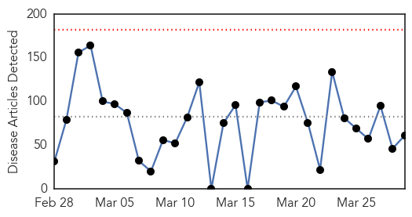
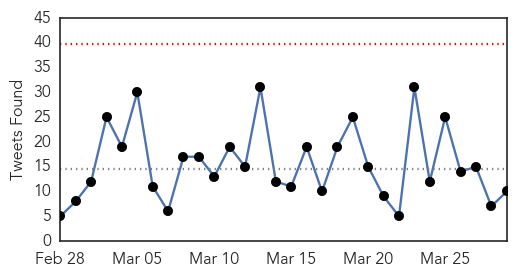
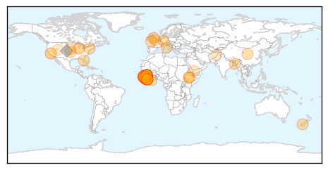
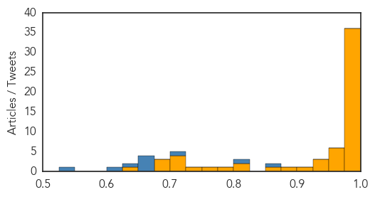

Toggle navigation
Early Warning
Daily Alerts
Ebola
Mar 29, 2015
Compare to:
-
Dengue Fever
Hemmorhagic Fever
Mold/Fungal Infection
Influenza
Meningitis
Pertussis / Whooping Cough
Middle East Respiratory Syndrome
Cholera
Hepatitis
Chikungunya
Yellow Fever
Bubonic Plague
West Nile Virus
Swine Flu
Measles
Unknown
Mumps
30 Day Trends
Web: 0
alerts
, 0
warnings
Twitter: 0
alerts
, 0
warnings
Top Articles:
Showing top 50 articles...
1.000
Liberia calls for sexual abstinence to cut Ebola transmission risk
1.000
US Patient Under Monitoring Suffers Cardiac Arrest While Jogging
1.000
Ebola toll passes 4,000 as fears grow worldwide
1.000
UPDATE 2-Liberia urges sexual caution to beat Ebola outbreak
0.999
UN Ebola head warns against complacency as fight enters last lap
0.999
Sierra Leoneans to stay home in final push to stop Ebola
0.999
Nebraska health care worker being monitored for Ebola has unrelated health issue- hospital
0.999
Sierra Leone Under 3-Day Ebola Lockdown
0.999
Ebola effect! Guinean President Alpha Conde declares 45-day 'health emergency'
0.999
Sierra Leoneans to stay home in final push to stop Ebola
0.999
Sierra Leoneans to stay home in final push to stop Ebola
0.999
Liberia urges sexual caution to beat Ebola outbreak
0.999
45-day Ebola 'health emergency' declared in 5 Guinea regions
0.999
Africa Still Lacks Clean Bill of Health
0.999
Liberia's last #Ebola patient dies from virus
0.999
Ebola Virus Patient in Liberia Dies
0.999
Liberia’s only remaining known Ebola patient dies
0.998
Guinea 'Emergency' Aimed at Stemming Spread of Ebola
0.998
New Emergency Measure for Ebola Outbreak ready in Guinea
0.998
45-day Ebola 'health emergency' declared in 5 Guinea regions
0.996
UN Ebola head warns against complacency as fight enters last lap
0.995
Ebola crisis is not yet over, says Christian Aid
0.994
UN Ebola head warns against complacency
0.994
Guinea declares Ebola 'health emergency' in five regions
0.993
CDC Press Release-Ebola in West Africa: The Importance of “Getting to Zero”
0.992
USAID’s Carroll urges forging global health partnership for security against diseases
0.990
3 West African countries increase fight to end Ebola
0.988
Ebola doctors come home: AfDB joins ECOWAS and Government of Côte d'Ivoire in welcome ceremony
0.982
Ebola Veterans Warn That Vigilance Is Still Needed as Case Numbers Drop · Global Voices
0.982
#Ebola more deadly for young #children
0.981
Kiwi nurse Bronni McBain tells of Ebola scare
0.980
Former Maryland governor: US needs new perspectives
0.980
Ailing WWII vet tries to get home; GoFundMe page set up
0.976
WHO steadfastness in the fight against Ebola
0.976
WHO reiterates continued support to defeat Ebola
0.975
3 West African countries increase fight to end Ebola
0.975
WHO reiterates continued support to defeat Ebola - Xinhua
0.974
Guinea Declares 45-Day "Health Emergency" Over Ebola Crisis
0.974
Worse than war: my year fighting Ebola in Africa
0.972
Tensions between Sierra Leoneans and Police Rise as Ebola Lockdown Ensues
0.970
3 West African countries increase fight to end Ebola
0.966
Study discloses Ebola’s impact on young children
0.945
Sierra Leone On Lockdown
0.937
RFA Argus honoured as she completes Sierra Leone deployment
0.930
Ebola rapid diagnostic kit developed by UK scientists in Sierra Leone
0.906
"We have to remain vigilant"
0.887
Guinea patrols border as Sierra Leoneans flee Ebola lockdown
0.852
EBOLA OUTBREAK UPDATES---March 29, 2015
0.810
Police fire tear gas on crowd during Sierra Leone Ebola lockdown
0.804
Police fire tear gas on crowd during Sierra Leone Ebola lockdown
Top Tweets:
0.860
Patient Monitored For Ebola Has Medical Emergency While Jogging - WOWT
http://t.co/xNfpGoMhKX
ebola EVD
0.821
Lockdown welcomed in Ebola-weary Sierra Leone - Al Jazeera America
http://t.co/q0bYUgsa1D
ebola EVD
0.709
Guinea declares Ebola 'health emergency' in five regions - BBC News
http://t.co/UsDw7yxzQ2
ebola EVD
0.674
RT: BBC: Guinea declares Ebola 'emergency' - Guinean President Alpha Conde has declared a 45-day "health emergency" in... http://…
0.663
Patient monitored for Ebola has cardiac issue while jogging - KMTV
http://t.co/RcFqoTqXM3
ebola EVD
0.663
Patient Monitored For Ebola Has Cardiac Issue While Jogging - WOWT
http://t.co/u9uFv0umqh
ebola EVD
0.663
Patient Monitored For Ebola Has Cardiac Issue While Jogging - WOWT
http://t.co/mDq7o04LXH
ebola EVD
0.625
Kiwi nurse Bronni McBain tells of Ebola scare - Taranaki Daily News
http://t.co/H0ZCaiz2nL
ebola EVD
0.602
RT: Ebola cases in SL are being pushed into a corner. This map from UNMEER shows cases in the 7 days to 25 March 2015. http://t.…
0.530
Former Alexandrian reflects on stint as Ebola nurse - Rock Hill Herald
http://t.co/PXNogvc0F8
ebola EVD
Web/News Articles

Tweets

Article Locations

Article Confidences
